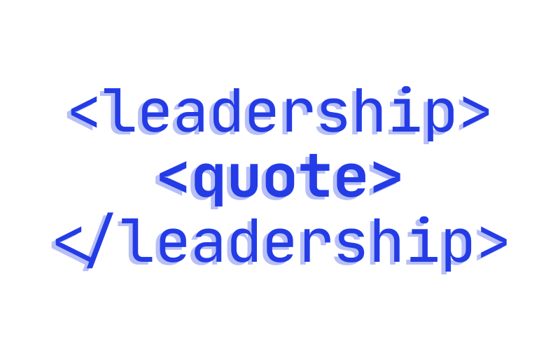

What is this experience to me?
What is this experience to us?
We work much better together and that is why brotherhood is one of the pillars. We hve to trust that others will help us in tough times and we will help them. By promoting brotherhood, we encourage others to support and care for another."
I feel very very strongly about brotherhood. Brotherhood is very important when it comes to organizations, and having a strong foundation with each other builds a strong foundation with our other pillars."
"Service brings people of the organization together while working hand in hand on different service projects and strengthens connections between each other."
"It's much more than putting up the podium and picking up yard markers. Much more than tear down. Everything you do is a service to someone, whether it be others or yourself."
"Once you take off the training wheels of your bike, your road to becoming a stronger leader has started. Be who you want to see leading and enjoy it."
"To be a leader, you must be okay with your team believing they achieved great things on their own. To lead is to want the best for your community even if the best may not be you. Leadership is not a position, but a mindset. Cultivate it here. Live in it now."
"Musicianship is the fundamental basis of brothers in Kappa Kappa Psi. It not only shows off certain talents one might possess, but it shows off an individuals dedication, reasoning, and much more that defines them more as a person."
"Musicians are the healers of the heart and soul."